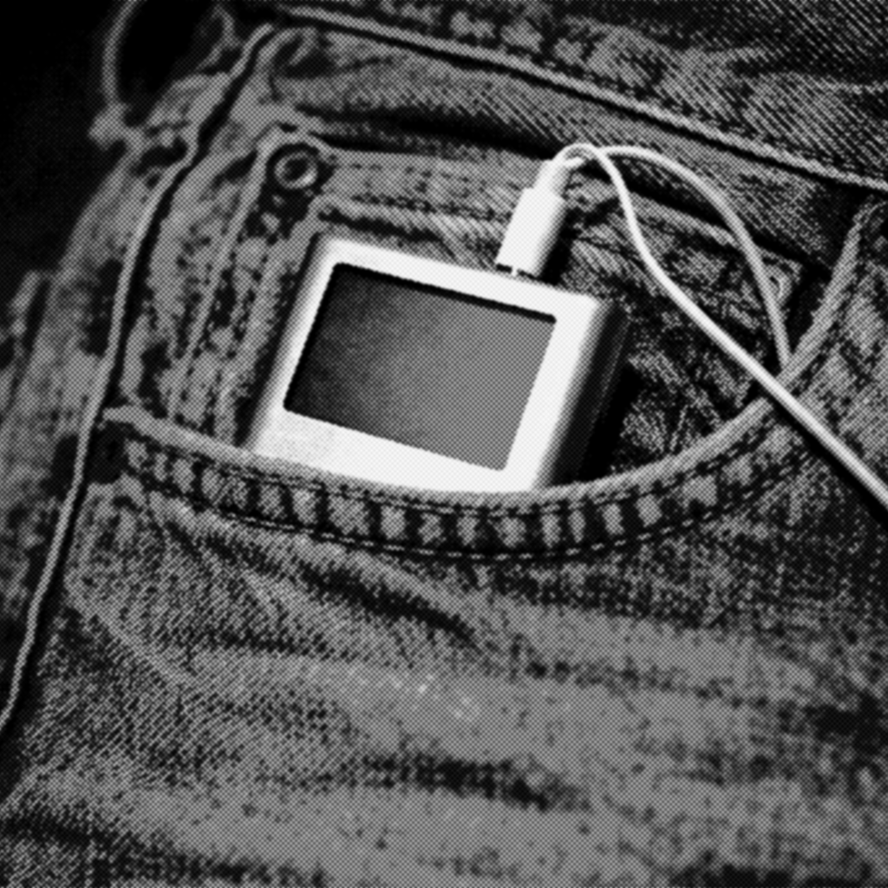

1994 год
Интернет начинает выходить за пределы университетов и технических центров. Появляются первые знакомые звуки подключения к сети и уведомлений цифровых сервисов.
Сводка по эпохе
Середина 1990-х связана с распространением домашних компьютеров и модемного интернета. Пользователи подключаются к сети по телефонной линии и впервые сталкиваются с браузерами, электронной почтой и онлайн-чатами.
Компьютеры становятся быстрее, а мультимедиа начинают активно развиваться. Именно в этот период формируется узнаваемый звуковой образ раннего интернета: шум модема, сигналы ошибок и короткие системные уведомления.
Компьютеры становятся быстрее, а мультимедиа начинают активно развиваться. Именно в этот период формируется узнаваемый звуковой образ раннего интернета: шум модема, сигналы ошибок и короткие системные уведомления.
